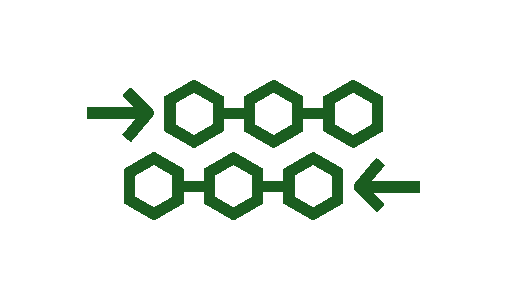

<mat-toolbar style="background-color: transparent;">
    <span><button mat-button [matMenuTriggerFor]="user_menu"><mat-icon>person</mat-icon> {{username}} <mat-icon>keyboard_arrow_down</mat-icon></button></span>
    <mat-menu #user_menu="matMenu">
        <button mat-menu-item (click)="logout();">Logout</button>
    </mat-menu>
    <span><button mat-button (click)="goTo();"><mat-icon>home</mat-icon> Home </button></span>
    <span *ngIf="getRole().indexOf('DESIGNER') >= 0;">
        <button mat-button [matMenuTriggerFor]="blueprints_menu">
            Blueprints <mat-icon>keyboard_arrow_down</mat-icon>
        </button>
    </span>
    <span>
        <button mat-button [matMenuTriggerFor]="descriptors_menu">
            Descriptors <mat-icon>keyboard_arrow_down</mat-icon>
        </button>
    </span>
    <span><button mat-button (click)="backClicked();"><mat-icon>arrow_back</mat-icon> Back </button></span>    
    <span class="fill-remaining-space"></span>
    <span *ngIf="getRole().indexOf('DESIGNER') >= 0;"></span>
    <span *ngIf="getRole().indexOf('EXPERIMENTER') >= 0;"></span>
    <!--span>
        <button mat-button [matMenuTriggerFor]="nfv_menu">
            NFV <mat-icon>keyboard_arrow_down</mat-icon>
        </button>
    </span-->
    <mat-menu #blueprints_menu="matMenu">
        <button mat-menu-item routerLink="/blueprints_vs">Vertical Service</button>
        <button mat-menu-item routerLink="/blueprints_ec">Execution Context</button>
        <button mat-menu-item routerLink="/blueprints_tc">Test Case</button>
        <button mat-menu-item routerLink="/blueprints_exp">Experiment</button>
    </mat-menu>
    <mat-menu #descriptors_menu="matMenu">
        <button mat-menu-item routerLink="/descriptors_vs">Vertical Service</button>
        <button mat-menu-item routerLink="/descriptors_ec">Execution Context</button>
        <button mat-menu-item routerLink="/descriptors_tc">Test Case</button>
        <button mat-menu-item routerLink="/descriptors_exp">Experiment</button>
    </mat-menu>
    <!-- mat-menu #nfv_menu="matMenu">
        <button mat-menu-item routerLink="/nfv_ns">NSD</button>
        <button mat-menu-item routerLink="/nfv_vnf">VNF Package</button>
        <button mat-menu-item routerLink="/nfv_pnf">PNFD</button>
    </mat-menu --> 
</mat-toolbar>
